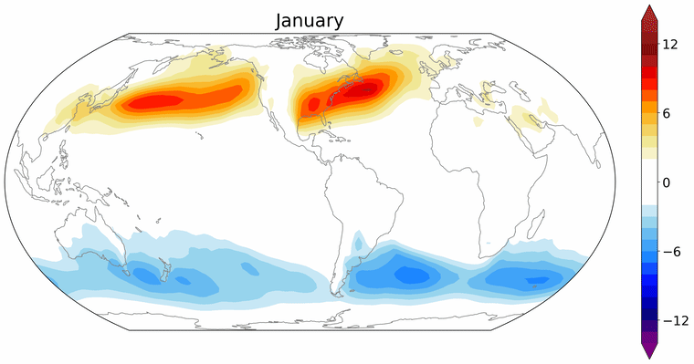
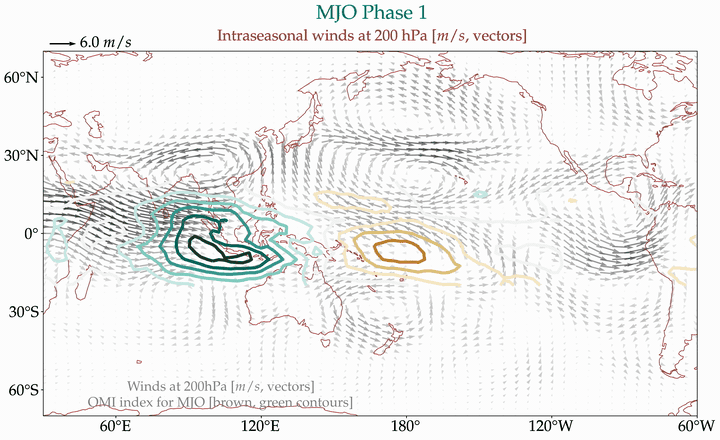
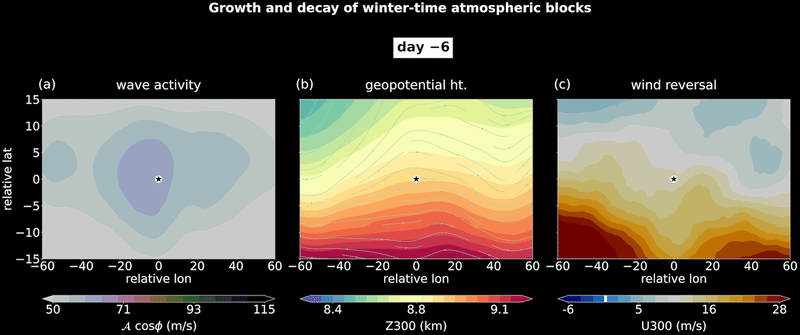
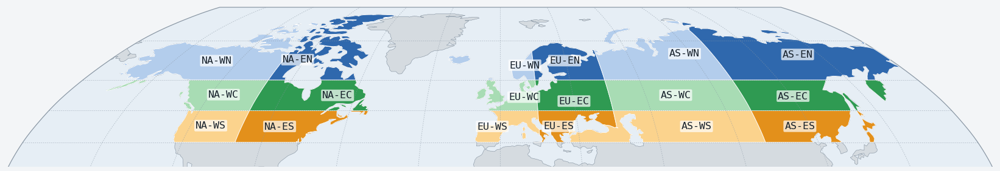

Projects
Extratropical storm tracks
What controls the intensity of the storm tracks through the seasons?

Papers
- Using the moist static energy budget to understand storm-track shifts across a range of time scales (J. Atmos. Sci., 2017) Paper
- A moist static energy framework for zonal-mean storm-track intensity (J. Atmos. Sci., 2018) Paper
- Surface fluxes modulate the seasonality of zonal-mean storm tracks (J. Atmos. Sci., 2020) Paper
- What controls the seasonality of poleward energy transport by intense extratropical cyclones? (J. Geophys. Res. Atmos., 2026) Paper
Tropical waves
How do subtropical Rossby waves amplify the circulation of the Madden–Julian Oscillation?

Papers
- The role of subtropical Rossby waves in amplifying the divergent circulation of the Madden–Julian Oscillation (J. Atmos. Sci., 2023) Paper
- A conceptual model to demonstrate equatorial Rossby-gravity wave instabilities under meridional wind shear (upcoming, in preparation)
Midlatitude blocking
What causes atmospheric blocks?

Papers
Extreme events
Funded by the Marie Skłodowska-Curie Actions (MSCA), Horizon Europe, grant no. 101110631.
How will blocking-driven heatwaves change in a warmer world?

Papers
- Surface impacts of dynamically-driven heatwaves (upcoming, in preparation)
- Projected future changes in atmospheric blocking and subtropical ridges and their link to European heatwaves in two SMILEs (upcoming, submitted)
- The dynamics of extreme wave-activity events in a warming climate (upcoming, in preparation)